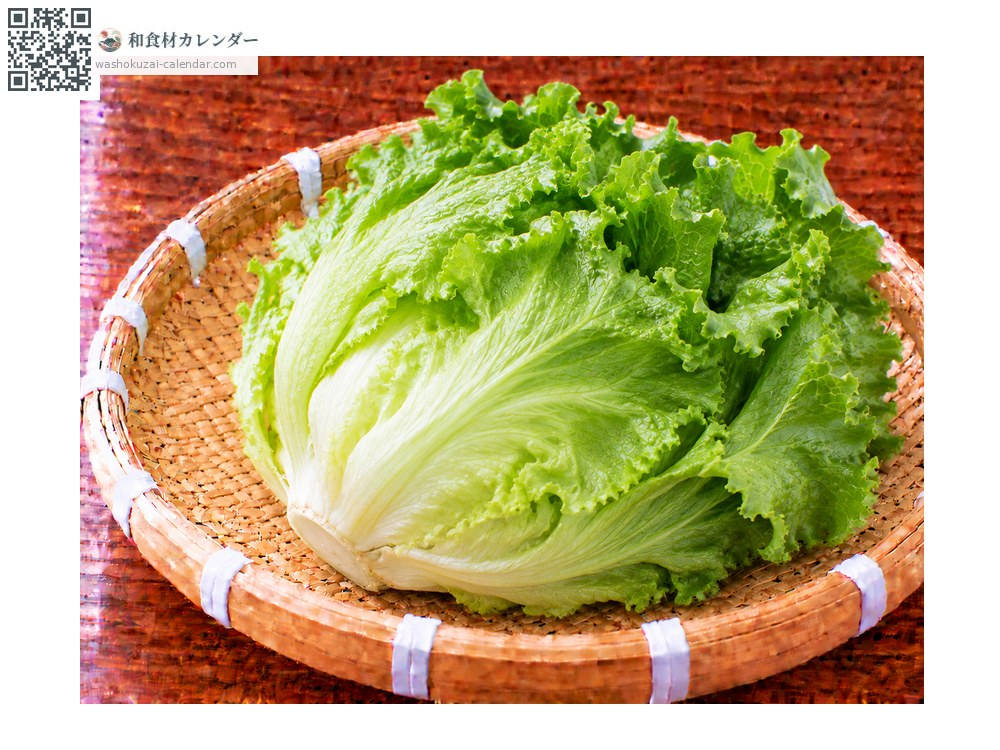
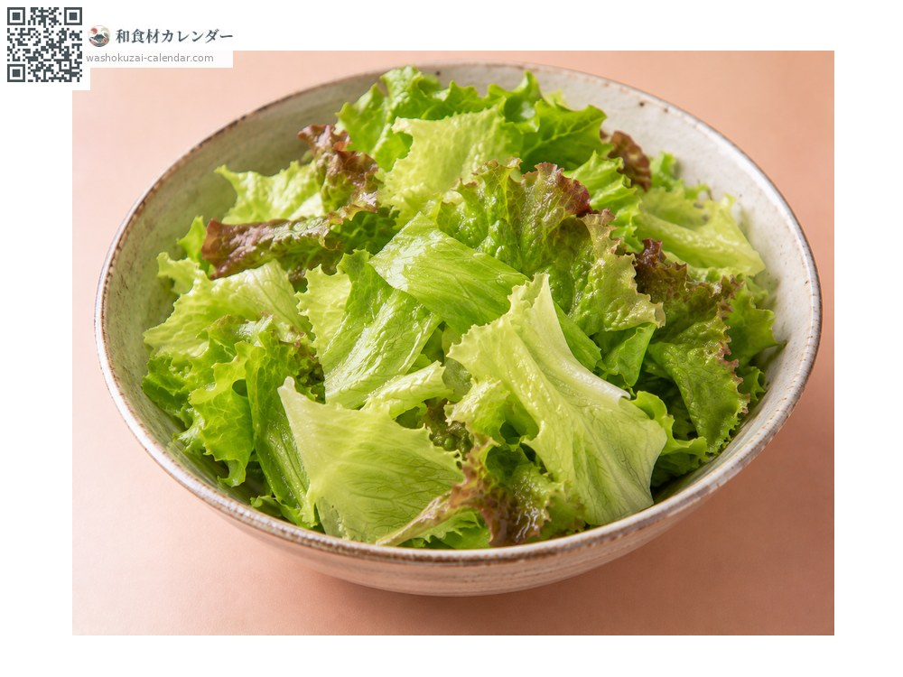
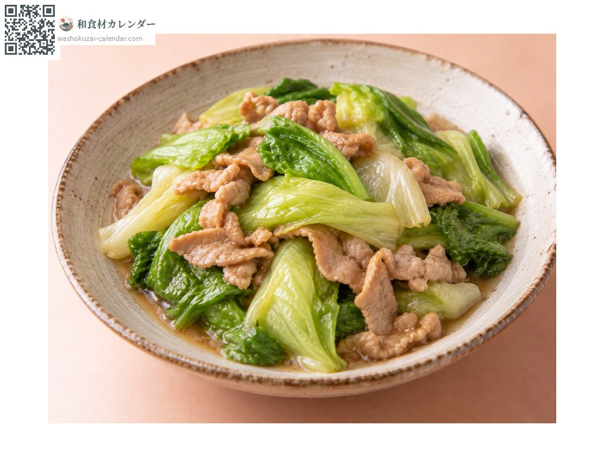
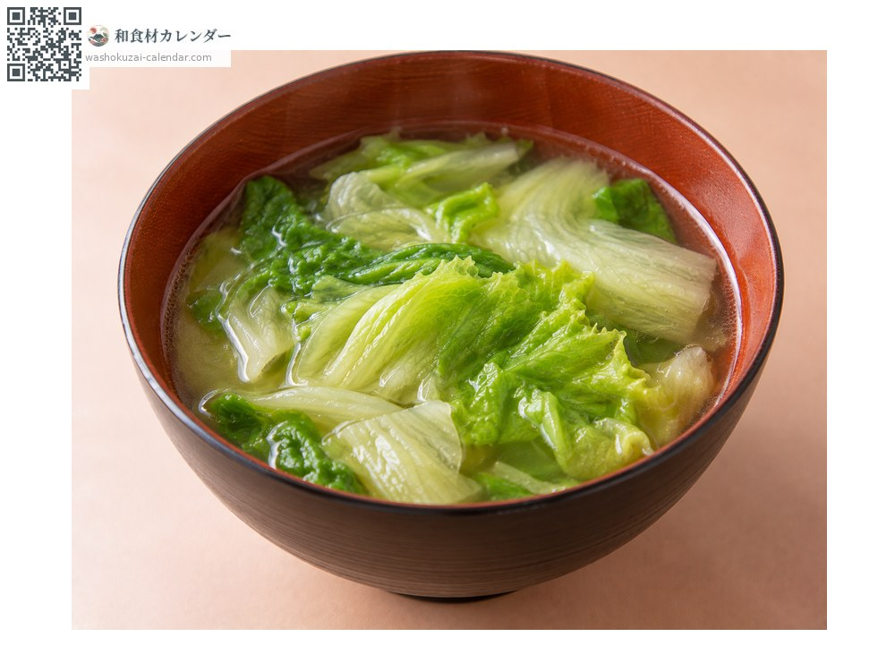
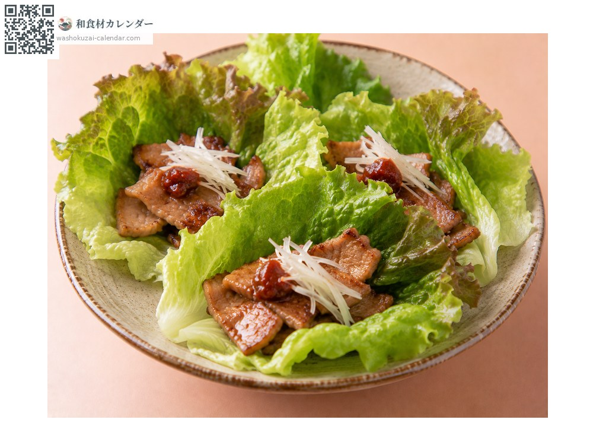

れたす
旬は4月・5月・6月・7月・8月

旬出回り

手でちぎる。包丁を使うと切り口が赤くなる。

強火で手早く。しんなりする前に火を止める。

仕上げに加える。歯ごたえを残す。

焼肉や炒め物を包む。みずみずしさが生きる。
持って軽く、ふんわり巻いているもの。切り口が白く小さいもの。
芯に濡らした紙を当てて袋に入れ冷蔵。切ったものは早めに。
玉レタスは重いほど育ちすぎで苦味が出るため、軽いものを選ぶ。切ると断面が赤褐色に変わるのはポリフェノールによるもので、手でちぎればこれを抑えられる。夏は長野の高原、冬は茨城や静岡が産地になる。